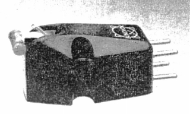

SX-100T

■価格 4,500円■発電方式 MM型■出力電圧 7mV■針圧 3g■再生周波数帯域 20-15,000Hz■チャンネルセパレーション 20dB■チャンネルバランス ■コンプライアンス 15×10-6cm/dyne■直流抵抗 ■負荷抵抗 ■インピーダンス ■針先 ■自重 7.5g■交換針 ■発売 1962年10月■販売終了 1971〜74年頃■備考 価格は1970年頃のもの
SONOVOXのインデックスへ